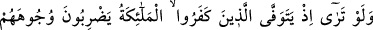

BİR MİLLET KENDİSİNİ
DEĞİŞTİRMEDİKÇE
50. Melekler kâfirlerin yüzlerine ve arkalarına vurarak ve “Tadın yakıcı azabı!”
(diyerek) canlarını alırken bir görseydin!
51. İşte bu, ellerinizin yapıp ileri sunduğu işler yüzündendir, yoksa Allah kullara
zulmedici değildir.
52. (Bunlar da) Firavun âilesi ve onlardan evvelkilerin âdeti üzere (davrandılar).
Onlar da Allah’ın âyetlerini inkâr ettiler. Allah da onları günahları sebebiyle
yakaladı. Şüphesiz Allah güçlüdür, cezâsı çetindir.
53. Bu böyledir, çünkü bir millet kendilerinde bulunan (güzel meziyet)i
değiştirmedikçe Allah onlara verdiği nimeti değiştirmez ve bir de Allah işitendir,
bilendir.
54. Firavun âilesi ve onlardan öncekilerin âdeti üzere (davrandılar). Onlar
Rablerinin âyetlerini yalanladılar da onları günahlarından ötürü helâk ettik ve
Firavun ailesini (denizde) boğduk. Hepsi zâlimlerdi.
Ey Muhammed! Bedir günü ölüm meleğine yardımcı “melekler kâfirlerin yüzlerine”
uzuvlarına ön taraflarından “ve arkalarına” uzuvlarına arka taraflarından demir
kamçılarla “vurarak ve” dünyada kılıcın tadına baktıktan sonra “Tadın yakıcı azabı!”
diyerek canlarını alırken” kâfirlerin durumunu “bir görseydin!”
“” yakıcı azab demektir. Âhiret azabının başlangıcıdır. Âyette şartın cevâbı yani
anlatılanlar görüldüğünde ne olacağı, ifadenin hududlarından dışarıda olduğu için
belirtilmemiştir. Yani, neredeyse anlatılamayacak feci bir şey görmüş olurdun, demektir.